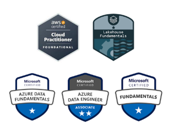

Rahul Reddy Ramasagaram
- Texas, United States
Welcome to my professional portfolio! I am a recent graduate from the University of Southern Mississippi, where I earned my master's degree in computer science. With a passion for Data Engineering, I am excited to embark on the next chapter of my career journey. My portfolio showcases my projects, experiences, and certification, demonstrating my dedication to excellence and innovation. I am enthusiastic about exploring opportunities that allow me to contribute my knowledge and skills to impactful projects and initiatives.
Professional Summary:
With over three years of dedicated experience in the IT industry, my expertise primarily lies in Big Data and cloud-related technologies. I have real-time exposure to various databases like MySQL, SQL Server, Oracle, Azure SQL Server, and Cosmos DB. Proficient in database analysis, design, and normalization, I utilize tools such as stored procedures, triggers, views, and user-defined functions.
My skill set extends to integration using SQL and Big Data technologies, alongside Java/J2EE, especially within AWS and Azure environments. I am well-versed in relational and multidimensional data design, including star schema, snowflake schema, cube design, and ETL processes.
I have a proven track record of designing, building, and maintaining ETL jobs and data pipelines, integrating data from diverse sources such as Kafka, S3, RDBMS, and data stores like HBase, Hive, Athena, and DynamoDB. I've developed Spark code using Scala, Python, and Spark-SQL/Streaming, contributing to faster data processing.
My experience includes a solid understanding of the Software Development Life Cycle (SDLC), encompassing methodologies such as Waterfall, Agile/SCRUM. Additionally, I have hands-on experience with core operating systems like Linux, Unix, Ubuntu, including system administration tasks and shell scripting.
In the realm of cloud technologies, I have worked extensively with the Azure Suite, including Azure SQL Database, Azure Data Bricks (ADB), Azure Data Lake (ADLS), Azure Data Factory (ADF), and Azure SQL Data Warehouse. I am constantly exploring and enhancing my skills, particularly in Spark, to optimize existing algorithms in Hadoop.
My proficiency extends to using Java APIs for Hadoop MapReduce, facilitating efficient distributed data processing on large datasets. I am adept at creating pipelines in Azure Cloud ADF, employing various activities such as Data Bricks, Copy, Filter, For Each, Move & Transform, among others.
I have a comprehensive understanding and hands-on experience with Continuous Integration and Continuous Deployment (CI/CD) pipeline configuration in DevOps, along with solid knowledge of containerization tools like Docker and Kubernetes. With excellent written and oral communication skills and a results-oriented attitude, I am committed to delivering high-quality solutions in every project I undertake.
Education:
THE UNIVERSITY OF SOUTHERN MISSISSIPPI
August 2022 - December 2023
Master's in Computer Science
Hattiesburg, Mississippi, United States.
GPA: 3.918/04.00
CVR College of Engineering
August 2016 - May 2020
Bachelor of Technology (B.Tech) in Information Technology.
Hyderabad, Telangana, India.
GPA: 8.09/10.00
Experience:
MODAK ANALYTICS
August 2019 - July 2022
DATA ENGINEER
- Developed and maintained robust web applications, using Java, Spring Boot, Spring Security, Azure, Apache Solr, StringTemplates contributing to a 30% improvement in application performance.
- Implemented efficient Apache Solr indexing strategies, boosting search performance by 40% and enabling faster data retrieval.
- Utilized Postman and Swagger to extensively test APIs, resulting in a 30% reduction in integration time and improved API discoverability.
- Reduced code conflicts by 25% through efficient Git management, enabling seamless collaboration among team members.
- Implemented data pipelines for transferring data between on-premises and cloud environments.
- Optimized database query response time by 30% through implementation of SQL indexing strategies, resulting in improved efficiency and faster data retrieval.
- Established comprehensive logging mechanisms and implemented advanced debugging techniques, leading to a 20% decrease in post-release issues.
- Designed and built custom tools that use Python, Unix, Hive, and PySpark to ingest huge datasets with 10 to 15 billion records, achieved a 40% improvement in data processing efficiency by optimizing the data ingestion process.
- Utilized HBase for storing and retrieving real-time data for PowerBI dashboards, enhancing data accuracy by 15% and 20% improvement in report generation time.
- Developed Shell Scripts to automate ETL processes, reducing processing time by 20% and minimizing errors in data extraction.
- Designed and deployed scalable solutions on both AWS and Azure, resulting in a 25% cost savings and increased reliability for the company.
- Led Agile andWaterfall development teams, ensuring timely project deliveries and customer satisfaction.
- Facilitated knowledge-sharing sessions resulting in improved efficiency by 20%, driving a collaborative team culture.
Projects:
NABU
November 2020 - July 2022
Modak Analytics
Hyderabad, Telangana, India.
- Improved response time by 25% and system efficiency by 20% through optimization of critical Java components.
- Implemented efficient Apache Solr indexing strategies, boosting search performance by 40% and enabling faster data retrieval.
- Utilized Postman and Swagger to extensively test APIs, resulting in a 30% reduction in integration time and improved API discoverability.
- Reduced code conflicts by 25% through efficient Git management, enabling seamless collaboration among team members.
- Docker containerization improved deployment time by 25% & ensured app consistency, leading to increased efficiency & reduced errors.
- Optimized database query response time by 30% through implementation of SQL indexing strategies, resulting in improved efficiency and faster data retrieval.
- Established comprehensive logging mechanisms and Implemented advanced debugging techniques, leading to a 20% decrease in post-release issues.
- Streamlined data pipelines with PySpark & Hive, cutting time-to-insights by 25% for data-driven decisions.
DATA HYDRATION
November 2019 - October 2020
Modak Analytics
Hyderabad, Telangana, India.
- Designed and built custom tools that use Python, Unix, Hive, and PySpark to ingest huge datasets with 10 to 15 billion. records. Achieved a 40% improvement in data processing efficiency by optimizing the data ingestion process.
- Utilized Azure Data Factory, Google Cloud Dataproc, StreamSets and Azure Databricks to successfully transfer data, resulting in a 50% decrease in data transfer time and increasing overall data processing efficiency.
- Utilized HBase for storing and retrieving real-time data for PowerBI dashboards, enhancing data accuracy by 15% and 20% improvement in report generation time.
- Developed Shell Scripts to automate ETL processes, reducing processing time by 20% and minimizing errors in data extraction.
Skills:
Languages:
Java, Python, JavaScript, TypeScript, SQL, C#.
Databases:
Microsoft SQL Server, Oracle, MySQL, Azure SQL Server, Cosmos DB,MongoDB, Cassandra, PostgreSQL.
Backend:
Microservices,Web API 2.0, Java EE, JDBC, Spring Boot, RESTfulWebservices, Apache Kafka, Apache Solr.
Front-End:
HTML5, CSS, JavaScript.
Hadoop Ecosystem:
HDFS, HBase, Hive, Sqoop.
Methodologies:
Agile and Waterfall.
Version Control:
Git/Github, Bitbucket.
Containerization Tool:
Docker, Kubernetes.
Infrastructure as a code:
Terraform.
Data Ingestion Tools/Technologies:
StreamSets, Apache Airflow, Azure Data Factory, Azure Databricks, Apache Spark.
Monitoring and Logging: Application Insights, log4j.
Cloud Technologies:
Azure SQL Server, Azure Functions, Azure Key Vault, Blob Storage, Azure App Services, Azure Virtual
Machine, Application Insights, Azure AD Authentication, AWS ECS, AWS S3, AWS EC2, AWS SQS, AWS Lambda, AWS,
CI/CD.
Tools:
Azure DevOps, Docker Desktop, Postman, Swagger, Visual Studio, Visual Studio Code, Microsoft SQL Server,
CI/CD, SonarQube, Eclipse, Azure Storage Explorer, GitHub Desktop.